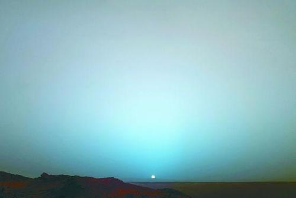
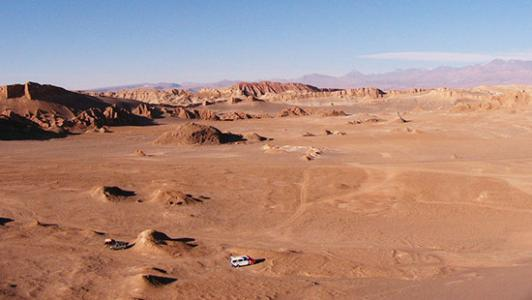
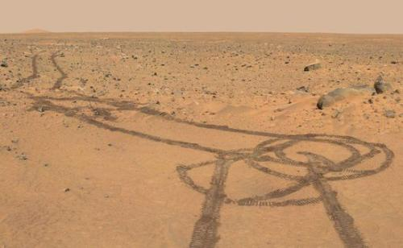
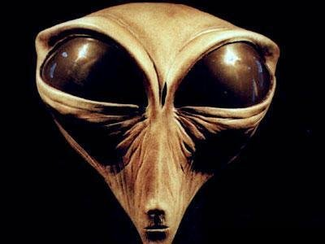
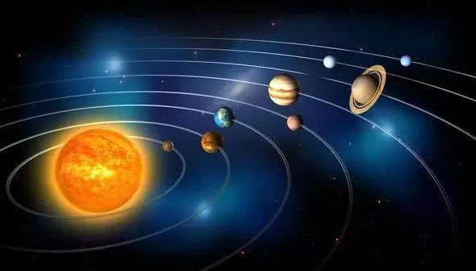

火星相关知识
火星（英语：Mars，拉丁语：Martis，符号：♂）是太阳系八大行星之一，是太阳系由内往外数的第四颗行星，属于类地行星，直径约为地球的53%，质量为地球的11%。自转轴倾角、自转周期均与地球相近，公转一周约为地球公转时间的两倍。橘红色外表是地表的赤铁矿（氧化铁）。我国古书上将火星称为“荧惑星”，西方古代（古罗马）称火星为“玛尔斯星”，在占星学中是十二星座白羊座的独一守护星，并非天蝎座的守护行星。
火星基本上是沙漠行星，地表沙丘、砾石遍布且没有稳定的液态水体（2015年9月28日，美国宇航局公布火星上有少量的水）。二氧化碳为主的大气既稀薄又寒冷，沙尘悬浮其中，每年常有尘暴发生。火星两极皆有水冰与干冰组成的极冠会随着季节消长
与地球相比，火星地质活动较不活跃，地表地貌大部分于远古较活跃的时期形成，有密布的陨石坑、火山与峡谷，包括太阳系最高的山：奥林帕斯山和最大的峡谷：水手号峡谷。另一个地形特征是南北半球的明显差别：南方是古老、充满陨石坑的高地，北方则是较年轻的平原。
火星的夕阳是蓝色的吗
内部构造
火星的内部情况只是依靠它的表面情况资料和有关的大量数据来推断的。一般认为它的核心是半径为1700千米的高密度物质组成；外包一层熔岩，它比地球的地幔更稠些；最外层是一层薄薄的外壳。相对于其他固态行星而言，火星的密度较低，这表明，火星核中的铁（镁和硫化铁）可能含带较多的硫。如同水星和月球，火星也缺乏活跃的板块运动；没有迹象表明火星发生过能造成像地球般如此多褶皱山系的地壳平移活动。由于没有横向的移动，在地壳下的巨热地带相对于地面处于静止状态。再加之地面的轻微应力，造成了Tharis凸起和巨大的火山。但是，人们却未发现火山有过活动的迹象。虽然，火星可能曾发生过很多火山运动，可它看来从未有过任何板块运动。
地形地貌
火星和地球一样拥有多样的地形，有高山、平原和峡谷，火星基本 上是沙漠行星，地表沙丘、砾石遍布。由于重力较小等因素，地形尺寸与地球相比亦有不同的地方。南北半球的地形有着强烈的对比：北方是被熔岩填平的低原，南方则是充满陨石坑的古老高地，而两者之间以明显的斜坡分隔；火山地形穿插其中，众多峡谷亦分布各地，南北极则有以干冰（固态的二氧化碳）和水冰组成的极冠，风成沙丘亦广布整个星球。
.jpg)
火星环境
火星的大气密度只有地球的大约1%，非常干燥，温度低，表面平均 温度零下55℃，水和二氧化碳易冻结。在火星的早期，它与地球十分相似。像地球一样，火星上几乎所有的二氧化碳都被转化为含碳的岩石。但由于缺少地球的板块运动，火星无法使二氧化碳再次循环到它的大气中，从而无法产生意义重大的温室效应。因此，即使把它拉到与地球距太阳同等距离的位置，火星表面的温度仍比地球上的冷得多。
火星的那层薄薄的大气主要是由遗留下的二氧化碳（95.3%）加上氮气（2.7%）、氩气（1.6%）和微量的氧气（0.15%）和水汽（0.03%）组成的。火星表面的平均大气压强仅为大约7毫巴（比地球上的1%还小），但它随着高度的变化而变化，在盆地的最深处可高达9毫巴，而在奥林帕斯山脉的顶端却只有1毫巴。但是它也足以支持偶尔整月席卷整颗行星的飓风和大风暴。火星那层薄薄的大气层虽然也能制造温室效应，但那些仅能提高其表面5℃的温度，比我们所知道的金星和地球的少得多。
水
这些最新的证据来自正围绕火星运行的强大飞船“火星勘测轨道器”（MRO）拍摄的图像。根据这些图像科学家们识别出一个巨大的冲积三角洲这个三角洲所在的河流最终注入一个面积几乎覆盖1/3火星表面的巨型海洋。
论述这项发现的论文作者之一是美国加州理工学院地质学助理教授麦克·兰博（Mike Lamb），他表示：“科学家们长期以来一直认为火星北半球广阔的低地平原是一片干涸的古代海洋，但是苦于缺乏确凿的证据。
此次的研究结果尽管距离给出直接的证据仍然有距离，但它的确进一步支持了这一理论。研究小组仔细审视由火星勘测轨道器搭载的HiRise相机拍摄的火星北半球低地地区一小片区域的高分辨率图像。该设备可以识别火星地表10英寸（约合25厘米）直径的物体。更加具体而言，科学家们仔细观察了一个名为“Aeolis Dorsa”的区域中的一部分，面积约100㎞²，这片地区距离盖尔陨石坑约620英里（约合1000公里）。盖尔陨坑便是美国好奇号火星车登陆的地方，它正在这一地区开展地质考察

冰的存在
2007年三月，NASA就声称，南极冠的冰假如全部融化，可覆盖整个星球。推论有更大量的水冻在厚厚的地下冰层（cryosphere），只有当火山活动时才有可能释放出来。 史上最大的一次是在水手谷形成时，大量水释出，造成的洪水刻划出众多的河谷地形，流入克里斯平原。另一次较小的一次，是在五百万年前科伯洛斯槽沟（Cerberus Fossae）形成时，释出的水在埃律西姆平原 （Elysium Planitia）形成冰海，至2019仍能看见痕迹。对于火星上有冰存在的直接证据在2008年6月20日被凤凰号发现，凤凰号在火星上挖掘发现了八粒白色的物体，当时研究人员揣测这些物体不是盐 （在火星有发现盐矿）就是冰，而四天后这些白粒就凭空消失，因此这些白粒一定升华了，盐不会有这种现象。火星全球勘测者所照的高分辨率照片显示出有关液态水的历史。尽管有很多巨大的洪水道和具有树枝状支流的河 道被发现，还是没发现更小尺度的洪水来源。推测这些可能已被风化侵蚀，表示这些河道是很古老的。火星全球勘测者高解析照片也发现数百个在陨石坑和峡谷边缘上的沟壑。它们趋向坐落于南方高原、面向赤道的陨石坑壁上 。因为没有发现部分被侵蚀或被陨石坑覆盖的沟壑，推测他们应是非常年轻的。有个特别引人注目的例子。短短6年，这个沟壑又出现新的白色沉积物。NASA火星探测计划（Mars Exploration Program）的首席科 学家麦克·梅尔（Michael Meyer）表示，只有含大量液态水才能形成这样的样貌。而水是出自降水、地下水或其他来源仍是一个疑问。不过有人提议，这可能是二氧化碳霜或是地表尘埃移除造成的。11米深。另外，地下的 水冰永冻土可由极区延伸至纬度约60°的地方
探索生命
2000年，一块火星陨石在美国于南极洲发现，编号为ALH84001的 碳酸盐陨石。美国国家航空航天局声称在这块陨石上发现了一些类似微体化石结构，有人认为这可能是生命存在的证据 [12] ，但有人认为这只是自然生成的矿物晶体。但直到2004年，争论的双方仍然没有任何一方占据上风。
维京号（或海盗号）Viking probes曾做实验检测火星土壤中可能存在的微生物。实验限于维京号的着陆点并给出了阳性的结果，但随后即被许多科学家所否定。这是正在进行中的争议。现存生物活动也是火星大气中存在微量甲烷的解释之一，但通常人们更认同其它与生命无关的解释
将来人类若对外星殖民，由于火星的友善条件（同其他行星相比，火星最像地球），它很可能是我们的首选地点。
火星曾适合生命存在。火星上是否存在适合生命存在的物质，一直是人类试图揭开的谜底。对于这个疑问，“好奇”号火星车在火星探索7个月后，科学家给出肯定的答案。美国航天局12日宣布，“好奇”号火星车对火星基岩样品的分析显示，火星古代环境确曾适合生命存在
星体探测
火星的火红色，自古就吸引着人们，而古代希腊更是称之为战神。此时人们观测火星就和其他天体般，大部分是为了占星，而为了科学目的主要在17世纪之后，如开普勒探索行星运动定律时就是依据了第谷积累的大量而精密的火星运行的观测资料
乔瓦尼·斯加帕雷里所绘之火星地图。望远镜发明后，人们对火星可以进行更进一步的观测。第一个使用望远镜观测星空的伽利略所见的火星只是一个橘红小点，然而随着望远镜的发展，观测者开始辨别到一些明暗特征。惠更斯依此测出火星自转周期约为24.6小时，他亦为首次纪录火星南极冠的人。一开始由于各人各自观测，意见亦不一致，地名也未统一（例如用绘制者名字命名）。后来意大利的乔瓦尼·斯加帕雷里（Giovanni Schiaparelli）统合了各家说法而绘制了一个较可信的地图，地名取自地中海、中东等的地名和圣经等作为来源，而其余则依照旧有的观念：暗区被认为是湖（lacus）海（mare）等水体，如太阳湖（Solis Lacus——Lake of the Sun）、塞壬海（Mare Sirenum——the Sea of Sirens）、最明显的暗大三角——大塞地斯（Syrtis Major）；而亮区则是陆地，如亚马逊（Amazonis）。这个命名系统一直延续下来。
当时，斯加帕雷里和同期观测者一样，观察到了火星表面似乎有一些从暗区延伸出的细线，因为对于暗区是水体的传统，这些细线命名为水道（canali）。而后来观察到暗区会在冬季时缩小、夏季时扩张，有人提出暗区是植物覆盖、而暗区的扩大缩小则是消长所引起的，改变以往认为暗区是水的说法。帕西瓦尔·罗威尔（Percival Lowell）亦观察到，并宣称那些“水道”其实是人工挖掘的“运河”，用来灌溉植物，因为水道应太细不可见，而看到的细线应是灌溉出的大片植物。风靡大众的火星科幻和火星人即源于此。不过这些细线大多已证明是不存在的，部分则是峡谷或陨石坑后延伸出的深色沙子。而火星表面颜色的改变则是因为沙被风吹移，或发生火星尘暴
星体运动
火星与太阳平均距离为1.52AU（天文单位），公转周期为687地球日，1.88地球年（以下称年），或668.6火星日。平均火星日为24小时39分35.244秒，或1.027491251地球日

火星自转轴倾角为25.19度，和地球的相近，因此也有四季，只是季节长度约为两倍。由于火星轨道离心率大约为0.093（地球只有0.017），使各季节长度不一致，又因远日点接近北半球夏至，北半球春夏比秋冬各长约40天。2009年10月26日为北半球春分，2010年5月13日为夏至，北半球处春季。
火星蓝莓
2004年，美国宇航局的“机遇”号火星车在“奋进”陨石坑附近发现弹珠形蓝色奇异物体，被形象地称之为“火星蓝莓”
“科学家表示：“这些物体的外部似乎易碎，中部则较为柔软。它们的密度、结构和构成均存在差异，分布也不同。因此，我们面对的是一个非常有趣的地质学谜团。”一种理论认为火山喷出的岩浆形成了这些小球，而不是在水的作用下形成。在“火星蓝莓”内，科学家发现大量赤铁矿，说明它们在地下水穿过多孔岩过程中形成。水流能够导致一系列化学反应，促使铁矿变成小球。不过，这一理论无法解释“蓝莓”的尺寸为何较小。
研究发现，“火星蓝莓”只是小陨石在穿过火星大气层过程中分裂后留下的残余，无法证明火星古代曾出现流水。陨石撞击是一种更令人信服的解释，能够解释“火星蓝莓”的外形和构成。科学家称“这些小球的任何一种物理特性都与凝固模型不匹配，但陨石理论能够解释它们的所有特性。”
.jpg)
在火星赤铁矿石一致性方面，绝大多数“火星蓝莓”的直径都在0.16英寸（约合4毫米）左右，通常不超过0.24英寸（约合6.2毫米）。米斯拉教授指出“火星蓝莓”的尺寸差异可以用陨石撞击解释。研究人员发现一颗直径1.6英寸（约合4厘米）的陨石能够产生1000颗直径0.16英寸（约合4毫米）的小球，分布在面积广阔的区域内。
三星一线
2016年8月24日将出现罕见的三星一线天文现象。美丽的土星、距离地球最近的外行星火星和天蝎座最亮恒星“心宿二”，三者依次连成一条直线。上一次出现在1986年2月17日。
